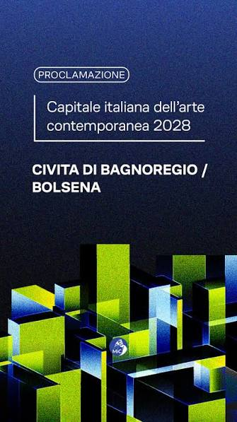

Il riconoscimento di Civita di Bagnoregio e Bolsena quali Capitali dell’Arte Contemporanea 2028 adottato recentemente dal Ministero dei Beni Culturali, conferma il valore e le potenzialità della Tuscia nella sua interezza.
Grande soddisfazione è stata espressa dai sindaci Luca Profili di Bagnoregio e Andrea Di Sorte di Bolsena.
Un riconoscimento che premia la qualità della proposta delle due città e la capacità di fare squadra, valorizzando il patrimonio culturale della Tuscia e proiettandolo in una dimensione nazionale e internazionale.
Il progetto rappresenta una grande opportunità per promuovere l’arte, coinvolgere le nuove generazioni e rafforzare l’attrattività dei nostri borghi.
Ci auguriamo che in coincidenza con il riconoscimento di Civita di Bagnoregio e Bolsena quali Capitali dell’Arte Contemporanea 2028 e nel corso della prossima campagna elettorale per il rinnovo di tanti comuni e per l’elezione delle Camere, nel 2027 si instauri tra le forze politiche, economiche e sociali della Tuscia un dibattito articolato, fattivo e realistico su un coerente modello di sviluppo della nostra provincia di Viterbo, negli ambiti regionale, nazionale ed Europeo.
Il modello di sviluppo della Tuscia, delineato dall’azione e dalle criticità delle amministrazioni comunali dalla provincia di Viterbo, realizzabile tramite adeguati finanziamenti progettuali regionali, nazionali ed europei, si articola negli ambiti che possono così riassumersi:
qualità della vita nelle città e nei piccoli centri, in particolare per la gestione della viabilità e del traffico;
collegamenti viari regionali e nazionali;
Istruzione, cultura, convegnistica, turismo e termalismo;
Ambiente e fruibilità dei beni ambientali e culturali;
l’industria e attività collegate al turismo e ricettività della Tuscia.
Servizi sanitari di base e medicina territoriale.
La Tuscia dovrà attrezzarsi altresì per potenziare e valorizzare i settori ambientale e della qualità della vita, soprattutto in termini di cultura, monumenti natura, cura dell’alloggio con la qualificata rete di alberghi e agriturismi, con alimentazione di qualità dei ristoranti tipici, con trasporti da efficientare, sport e divertimenti, shopping di qualità prevalentemente nei Centri Storici.
In un’ottica orientata alle cose fatte, a quelle da fare, alle esigenze che le nostre popolazioni vorrebbero essere realizzare per migliorare la qualità della vita quotidiana in primis e la ricettività turistico-culturale, vorrei stilare una classifica breve su quanto si sta concretizzando e quanto ancora c’è da fare per l’affermazione di un vero modello di sviluppo qualificato della Tuscia viterbese.
Il riconoscimento ottenuto da Bolsena e Bagnoregio conferma che i centri storici della Tuscia e le loro tipicità ambientali, culturali, ed eno-gastronomiche, vadano promossi nella loro interezza come patrimonio condiviso da tutelare e valorizzare.
Il collegamento inscindibile tra Agricoltura, Ambiente, Paesaggio ed insediamenti urbani, intesa nel senso di una coerenza con il “genius loci” – con il quale si indica l’insieme delle caratteristiche socio-culturali, architettoniche, di linguaggio, di abitudini che caratterizzano un luogo, un ambiente, un territorio, una città – deve essere concretamente declinato come tutela delle peculiarità della Tuscia, nella sua varietà di unicità ambientali .
I nostri Centri storici sono caratteristici poiché sorti nei secoli dal mare ai laghi, dalle colline alla valle del Tevere, dall’archeologia ai luoghi suggestivi, di valore religioso e storico-ambientale che attraversano praticamente tutti i periodi storici, con testimonianze architettonico-monumentali e artistiche che spaziano dagli Etruschi e Romani, al Medioevo, sino al Rinascimento e all’archeologia agricolo-industriale (penso alle Stazioni dismesse delle linee ferroviarie o le Case cantoniere sorte sulle vie stradali) di interessanti siti della produzione, delle reti viarie, dei trasporti e delle dimore storiche, realizzati dal XVII al XX secolo.
Chi vuole il vero sviluppo della Tuscia deve essere cosciente che tutto questo patrimonio è a disposizione di privati, volontariato e istituzioni per coniugare la tradizione di mestieri con il lavoro agricolo, artigianale e piccolo-industriale, con le eccellenze delle tipicità enogastronomiche e la presenza agrituristica e termale, l’innovazione e la ricerca dell’Università della Tuscia, i Turismi di qualità, esclusività e di innovazione.
“Le priorità infrastrutturali ed intermodali per evitare l’isolamento”
È determinante rivedere il quadro della mobilità e dei trasporti in questo tratto di Italia centrale. Da qui l’idea di realizzare un collegamento ferroviario ad alta velocità in grado di collegare per la prima volta le realtà come Civitavecchia, Orvieto, Viterbo, Rieti e Umbria giornalmente con Milano, attraverso il nodo intermodale di Orte, strategicamente rilevante per l’intero Paese (i lavori della superstrada recentemente avviati ne sono un esempio chiaro che andrebbe esteso per completare il quadro alle Vie Consolari ed alle ferrovie così dette minori, anche con qualche decisione coraggiosa orientata alla finanza di progetto ed alle concessioni). Senza un sistema infrastrutturale significativo di potenziamento e ammodernamento delle linee ferroviarie e stradali (vie consolari Cassia Aurelia e Flaminia ) questa provincia – ci è stato ripetuto sino all’inverosimile – è destinata a un declino irreversibile, perdendo la possibilità di sfruttare l’unica io e naturale le grandi risorse di cui dispone, come le (ancora incontaminate) bellezze storico-ambientali, la vocazione agricola, gli impianti termali.
“Il termalismo, l’artigianato artistico, il turismo congressuale, formativo-professionale in collegamento con la Ricerca Universitaria e la sua rete diffusa nel territorio, i percorsi ciclo-pedonabili e a cavallo come volani di crescita per la Tuscia”,
Per valorizzare il termalismo della città di Viterbo, ma anche di altri siti legati alle acque salubri di cui è ricchissimo il nostro territorio, l’artigianato artistico legato alle secolari tradizioni di laboriosità delle comunità dell’area falisca di Civita Castellana, della Valle del Tevere, della costa e maremma Laziale, del comprensorio montano dei Cimini, dell’Alto Lazio legato alla Via Francigena e al percorso degli Etruschi, oltre alla città di Viterbo e dei suoi incantevoli dintorni con siti archeologici e dimore storiche, il turismo congressuale, le città ed i Poli del Teatro, dei Musei e della Musica degli Strumenti Antichi con stagioni concertistiche già di successo, la diffusione di Festival culturali oltre Viterbo, i supporti delle Leggi regionali – Spettacoli dal vivo, Reti commerciali di Strada – con la fattiva collaborazione di Enti regionali e comunali, le Città sedi delle Rievocazioni Storiche Medievali e Rinascimentali, lo sviluppo del trekking, dello Spartan-rice e dei percorsi naturalistici percorribili a piedi, a cavallo e attraverso piste ciclo-pedonabili sul Tevere, formativo-professionale in collegamento con la Città Universitaria e la sua rete diffusa ed a servizio dello sviluppo del territorio, dall’agricoltura al marketing territoriale, all’agricoltura alle costruzioni eco-compatibili.
Come più volte ribadito, occorre offrire parallelamente una infrastruttura immateriale adeguata, una rete tecnologica di telecomunicazioni avanzate a banda larga che renda il territorio attrattivo e globalmente connesso.
Stefano Stefanini